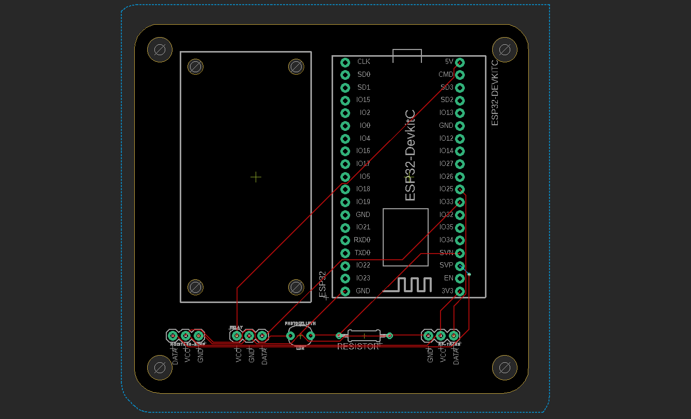
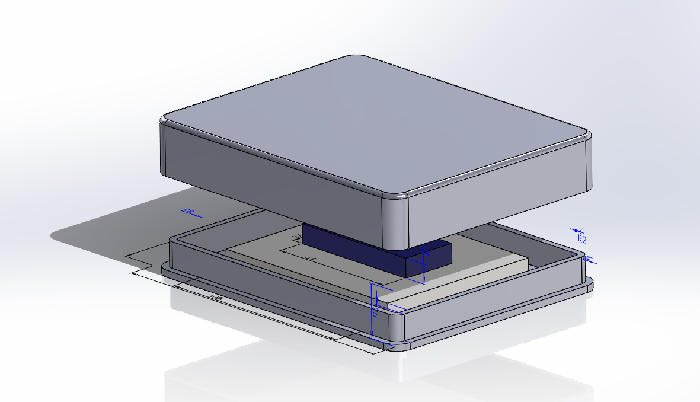

De eerste weken van Smart Industry stond in het teken van kennismaking met IoT. Hierbij hadden we een ESP32
gekregen en een tutorial om deze te besturen op RobotExchange.io. Aangezien ik op mijn opleiding al had gewerkt
met soortgelijke componenten was dit niet al te ingewikkeld. Ondanks dat was het wel belangrijk om al de
componenten en de ESP32 te testen om te verzekeren dat ze allemaal functioneren.
Bewijsmateriaal
De eerste opdracht was de LDR (Light Dependent Resistor) werkend te krijgen. Hierbij moest de waarde van de
LDR uitgelezen worden door de ESP32 en doorgestuurd worden naar mijn computer. In het filmpje is te zien hoe
de waarde van de LDR op mijn scherm getoond word.
Deze test was op zichzelf best simpel zeker omdat ik zelf al vaak genoeg heb gewerkt met een LDR. Echter was
de ESP32 wel niet voor mij en deze beviel me wel. Er zitten veel pinnen op en heeft een 10 keer zo snelle
clockspeed als een soort gelijke Arduino (Arduino Zero) terwijl hij minder stroom verbruikt. Verder heeft de
ESP32 ingebouwde WIFI en Bluetooth ondersteuning.
2 sept 2021
Voor de tweede test moest alleen de code aangepast worden. Hiermee zou de build-in led aangaan als je je
vinger over de LDR sensor houd. Als het programma start wordt er een referentie waarde bijgehouden van de LDR.
Als je je vinger boven de sensor houd zakt de waarde in. Als dit met meer dan 200 gebeurt ten opzichte van de
referentiewaarde, gaat het build-in ledje aan.
2 sept 2021
Deze opdracht hoorde eigenlijk bij de tweede week. Maar omdat ik alle opdrachten van de eerste week al af had
was ik doorgegaan met die opdrachten. Bij de eerste opdracht van week 2 was het de bedoeling dat we de waarde
van een Moisture Sensor uit gingen lezen en deze toonde op de computer. Dit werkte zo goed als hetzelfde als
de LDR, maar dan had je geen weerstand nodig.
2 sept 2021
Verdiepende lessen
Na het controleren van de werking van alle componenten zijn we iets dieper ingegaan op de software. Hierbij hebben
we onder andere gebruik gemaakt van de Blynk API en geleerd hoe functies werken. Aangezien ik deze dingen al
beheers door mijn studie heb ik in deze periode veel van de mede studenten geholpen met het maken van software en
het uitleggen hoe het allemaal werkt.
Bewijsmateriaal
De dag na de eerste les ben ik thuis doorgegaan om de rest van de sensoren werkend te krijgen voor les 2. De
eerste waarmee ik was begonnen was de DHT sensor. Deze sensor kan de luchtvochtigheid en de temperatuur meten.
Deze sensor geeft echter geen analoog signaal waardoor. Deze sensor geeft een digitale signaal, waardoor er
een library nodig was om de data te kunnen lezen van de sensor. Het gebruik van deze library is vanzelf
sprekend. In de foto is te zien hoe de luchtvochtigheid en de temperatuur te zien zijn op mijn scherm.
3 sept 2021
Om de pomp werkend te krijgen was aardig wat stroom nodig. Meer dan de ESP32 kan leveren. Om deze reden is er
een relais nodig. Deze functioneert soortgelijk als een schakelaar alleen dan digitaal aanstuurbaar door in
dit geval de ESP32. Het aansturen van dit relay werkte in eerste instantie niet omdat ik het relais probeerde
aan te sturen met 3.3 Volt. Echter werkt het relais op 5 Volt. Verder is de aansturing van het relais heel
simpel, een hoog signaal zorgt ervoor dat het relais aanstaat. Hierdoor zal de digitale schakelaar omgezet
worden. Als het signaal laag is wordt de schakelaar weer uit gezet en zal de pomp stoppen met pompen. In het
filmpje is te zien dat de pomp aan gaat terwijl op het scherm wordt getoont dat deze aangezet word en vice
versa.
3 sept 2021
De laatste sensor is de RF Transmitter. Dit is eigenlijk geen sensor omdat het niets meet. Het kan een RF
signaal sturen. Met dit signaal kan je onder andere KlikAanKlikUit apparaten aansturen. Wij hebben een
stekkerschakelaar gekregen die we kunnen aansturen met de RF Transmitter. Om een stekker schakelaar aan te
sturen moet je eerst de stekker schakelaar programmeren met een bepaalde code. Deze code kan gebruikt worden
om de stekker schakelaar aan te spreken. Dit heb ik gedaan met behulp van een library die (geloof ik) gemaakt
is door de docent.
In het filmpje is te zien hoe ik met de RF Transmitter de KlikAanKlikUit stekker schakelaar (niet zichtbaar in
het filmpje) aanstuur en hiermee mijn ledstrip op mijn bureau aanzet. Ik heb meerdere stekker schakelaars van
KlikAanKlikUit in mijn kamer. Alleen de stekker schakelaar onder mijn bureau ging aan. Dit kwam door de code
die ik in die stekker schakelaar had geprogrammeerd.
3 sept 2021
--%
luchtvochtigheid
--°
Temperatuur
--%
Bodemvocht
Deze meters geven meerdere verschillende waarden van de ESP32 weer. Om hier live waarde te zien moet de ESP32
aan staan en verbinding hebben met het zelfde netwerk als de computer waarop de website staat.
de luchtvochtigheid weer in percentage
21 sept 2021
In de video hiernaast is de Blynk API in werking te zien (zie bewijsstuk hierboven).
21 sept 2021
Plant water systeem
De eindopdracht van Smart Technologie is maken van een plant water systeem. Hierbij hebben we moeten leren hoe we
een microcontroller kunnen programmeren, een PCB kunnen ontwerpen, solderen en hoe we 3D modellen kunnen ontwerpen
en uitprinten.
Dit plant water systeem heeft een sensor om de grond vochtigheid en de lichtintensiteit te meten. Verder kan het
systeem een waterpomp aansturen een een RFID zender waarmee een klikaanklikuit stopcontact schakelaar aan het uit
gezet kan worden. Met deze schakelaar kan dan het licht aangezet worden als het donker is en met de waterpomp kan
water gegeven worden aan de lamp als de grondvochtigheid te laag is. De componenten zitten allemaal in een
zelf ontworpen 3D geprinte behuizing met een zelfontworpen PCB.
Bewijsmateriaal
Om het plant water systeem werkend te maken moest er ook software geschreven worden. Dit was voor mij niet een
heel
grote uitdaging gezien ik dit meerdere keren voor mijn studie en voor hobby heb gedaan. Verder was het ook
niet een
ingewikkeld systeem.
De code die ik heb gemaakt voor dit project is te downloaden door op de knop hieronder te drukken.
24 sept 2021
Om voor de eindopdracht een PCB te ontwerpen moesten we eerst oefenen hoe we eerst leren te werken met
software waarmee een PCB ontworpen kon worden. Hiervoor hebben we gebruik gemaakt van Eagle. In de afbeelding
hiernaast is een van de proefjes te zien. Voor deze lessen wist ik wel wat een PCB was en hoe ik
componenten moest vervangen van een PCB maar ik had er nog nooit een zelf gemaakt. Tijdens dit leerprocess heb
ik de stappen geleerd die bij het ontwerpproces komen kijken waar ik nog over na had gedacht. Echter was het
niet heel ingewikkeld met uitzondering van het ontwerpprogramma. Deze vond ik niet heel gebruiksvriendelijk en
ook niet heel intuïtief.
30 sept 2021

In de afbeelding hiernaast is te mijn uiteindelijke ontwerp te zien voor het plant water systeem. Deze is
gemaakt met Eagle en bevat alle onderdelen om al mijn hardware aan te sturen.
In dit ontwerp zijn alle componenten te zien die benodigd waren bij het plant water systeem. Zo is linksboven
plek gemaakt voor het relais en rechtboven plek voor de ESP32. Deze ESP is verbonden aan de andere
componenten, wat te zien is aan de rode lijnen in de afbeelding.
13 okt 2021
Nadat ik mijn PCB had ontvangen was het mijn taak om de componenten op het PCB te solderen. Ik had al meer
ervaring met solderen dus ik besloot dit thuis te doen. In de afbeelding hiernaast is mijn eindresultaat te
zien. Hier
is ook te zien dat ik nog niet de moist sensor en de LDR heb gesoldeerd op het PCB. Dit heb ik nog niet gedaan
omdat
het mijn plan is om deze sensoren in een extern kastje te plaatsen.
16 dec 2021
Het laatste ontwerp gedeelte van het plant water systeem was het maken van een bakje waar het PCB in
gemonteerd kon worden. Hier moesten we SolidWorks voor gebruiken. Mijn idee was om bakje te maken voor de
ESP en paar andere onderdelen en een klein bakje te maken voor de LDR en de moist sensor. Deze zijn beide te
zien in de afbeelding hiernaast.
Het (hoofd) bakje bestaat uit twee compartimenten, waarvan de onderste de PCB bevat en het bovenste
compartiment de batterijhouder. De PCB kan van de voorkant in het bakje geschoven worden en met twee schroeven
aan de rechterkant vast worden gezet. De batterijhouder wordt vastgehouden met de zijkanten van het bakje,
deze zijn zo gemaakt dat alle precies zou moeten passen.
16 dec 2021
Cobot course Delft
Voor een optionele opdracht was het mogelijk om naar de Haagse hogeschool te gaan in Delft om te gaan werken met
een robot robot. Hierbij hebben we geleerd wat de toepassingen en uitdagingen zijn van de implementatie van een
robot in een fabriek. Ook hebben we zelf mogen werken met een robot.
Bewijsmateriaal
Tijdens de uitstap naar Delft hebben we een Cobot robot mogen programmeren. De opdracht was om een robot een
zo hoog mogelijke toren te laten maken met blokjes. Dit hebben we gedaan in wedstrijd vorm door de 4 aanwezige
studenten in twee groepjes van twee te splitsen. Hierbij zat ik samen in een team met Giel.
Het is ons gelukt om een stapel te maken van 9 blokken, hiermee hadden we het wedstrijdje ook gewonnen. En
omdat we extra tijd hadden had ik ook nog gemaakt dat de robot de blokjes weer terug legt in een lijn zoals te
zien is in de video hiernaast.
22 nov 2021
Additive Manufacturing
De lessen van Additive Manufacturing voor het plant water systeem.
Bewijsmateriaal
De eerste les was een introductie in additive manufacturing en wat het was.
Er zijn meerdere soorten 3d printen, hiervan mogen we er een gebruiken om onze omhuizing mee te maken. Verder
werd de impact van additive manufacturing in de maatschappij verklaard.
De impact van additive manufacturing is zo groot omdat het een super simplistische manier is om producten te
ontwerpen. Er komen niet veel stappen bij kijken. Eerst moet er een ontwerp van een product gemaakt worden een
een keuze van materiaal etc. Hierna zou de 3D printen dit allemaal moeten kunnen maken zonder dat er extra
machines bij komen kijken. Ook is het mogelijk om veel verschillende vormen te maken die voorheen niet
mogelijk of rendabel waren. Deze twee grote voordelen maakt additive manufacturing een flexibele en in theorie
goedkope manier van produceren. Verder maakt het een agile werkmethode mogelijk. Voorheen zou een een dure
matrijs gemaakt moeten worden waarmee meerdere producten gemaakt konden worden. Als na het eerste product een
fout gevonden was zou alles weer opnieuw gemaakt moeten worden. Bij additive manufacturing zou alleen het
design aangepast moeten worden tijdens een nieuwe iteratie.
18 nov 2021

Les 2 van het de 3D course werd gehouden in Nijmegen en ging ging voornamelijk over de verschillende AM
methoden. Er zijn zeven methoden met elk eigen voor en nadelen. Ook is kunnen sommige methoden andere
materialen printen dan methoden. Verder hebben we in de les nog een groot gedeelte gewerkt met solidworks door
een kleine behuizing te maken voor een breadboard met daarom een ESP32. Mijn uitwerking is te zien in de
afbeelding hiernaast.
29 nov 2021
De derde les van 3d printen ging over dus financiele kant van additive manufacturing.
Hierbij hebben we geleerd dat het grootste voordeel van AM is dat een groot deel van de productieketen wegvalt
omdat veel onderdelen lokaal gemaakt kunnen worden. Hierdoor valt zowel de afhankelijkheid op externe partijen
weg maar ook de levertijden in de productieketen. Ondanks dat veel dingen gemaakt kunnen worden dmv AM, de
traditionele methode van produceren zal niet komen te vervallen. De methoden zullen samen gaan werken en de
elkaars kwaliteiten versterken. Als voorbeeld was gegeven dat een er een mal gemaakt zou kunnen worden met AM.
Deze mal zou vervolgens gebruikt kunnen worden om te spuitgieten. Hierbij kan er met de snelheid van
spuitgieten geproduceerd worden en de snelheid van AM om nieuwe prototypes te maken voor het verbeteren van
het product.
Verder heb ik tijdens deze les Mika D geholpen met het installeren van Fusion 360 op haar Macbook aangezien
SolidWorks niet werkt op MacOS.